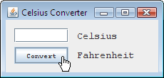

Questions
Question 1: When creating this new project, we left the "Create Main Class" checkbox deselected. Why?
Answer 1: We left this checkbox deselected because the
CelsiusConverterGUI is the application's
main entry point.
Question 2: The _____ contains all of the components offered by the Swing API.
Answer 2: Palette
Question 3: What is the purpose of the Design Area?
Answer 3: The Design Area is where you visually arrange the various components of the application's GUI.
It cuts development time because all of the application's layout code is auto-generated.
Question 4: Explain the difference between the Source and Design tabs.
Answer 4: These tabs provide two different views of the same application. The Design tab shows what the application
actually looks like, and the Source tab shows its source code. Some portions of the source tab are auto-generated and not directly editable by the user.
Question 5: Name some advantages to editing an object with the Property Editor (as opposed to editing it directly in the source code.)
Answer 5: Using the property editor elimates typing errors, accidental modification of the wrong code, and provides a listing
of all properties exposed by a particular object.
Question 6:This lesson used Swing objects of three different types. What were they?
Answer 6: JLabel,
JButton, and
JTextField
Question 7:In the Design Area, describe the process for setting two components to the same width.
Answer 7:
Shift-click the two target components; this will highlight each showing that they are selected. Right-click (control-click for mac users) Same Size -> Same Width. The components will now be the same width.
Exercises
- Use the property editor to change the appearance of this application. Experiment by changing some values
and seeing what effect your changes have. This is a quick and easy way to explore the properties of the various
Swing components.
Below we've modified the application to use
DialogInput font, and
have changed the cursor to a hand cursor.

A modified CelsiusConverter Application.